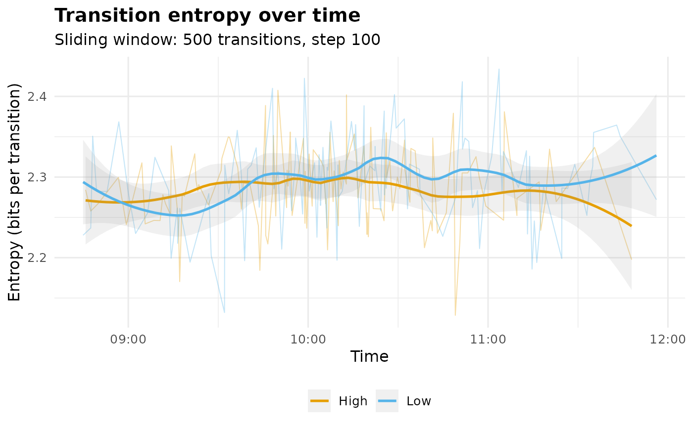

Tracks transition entropy over time: transitions are built within each actor's sequence, pooled in temporal order, and a window of fixed size slides across the stream, yielding one entropy estimate per window. This turns transition entropy from a snapshot into a process measure - declining entropy signals routinization, rising entropy exploration, and level shifts mark phase changes (cf. Krejtz et al., 2025, who track gaze transition entropy through task phases this way).
Usage
entropy_trajectory(
data,
action,
actor = NULL,
time = NULL,
group = NULL,
window = 500L,
step = NULL,
base = 2
)Arguments
- data
A long-format data.frame of timestamped events.
- action
Character. Name of the column holding the state/action.
- actor
Character or NULL. Column identifying sequences; transitions are only formed between consecutive events of the same actor. NULL treats the data as one sequence.
- time
Character or NULL. Timestamp column used to order events within actors and to place windows on a real time axis. NULL keeps the row order and uses the transition index as the axis.
- group
Character or NULL. Column splitting the data into parallel trajectories (e.g. condition, achievement level).
- window
Integer. Number of transitions per window (default
500).- step
Integer. Stride between window starts (default
window %/% 5).- base
Numeric. Logarithm base (default
2, bits).
Value
An object of class "net_entropy_trajectory" with:
- trajectory
Tidy data.frame, one row per window:
group,window(index),time(window midpoint; transition index when notimecolumn),time_start,time_end,n_transitions,n_states(distinct states in the window),entropy(bits per transition) andentropy_norm(divided by \(\log_b\) of the window's active-state count; in \([0, 1]\)).- window, step, base, states
Call metadata;
statesis the global state set.
Details
Per-window entropy is the empirical conditional entropy \(-\sum_{ij} (n_{ij}/N) \log_b(n_{ij}/n_{i\cdot})\) - rows weighted by observed occupancy rather than the eigenvector stationary distribution. Within a short window the chain is routinely non-ergodic (absorbing fragments, unvisited states), where the eigenvector is undefined or misleading; the empirical estimator is the standard windowed choice and converges to the stationary entropy rate for long stationary stretches.
Windows shorter than window at the tail are dropped; if the whole
stream is shorter than window, one window covering everything is
returned with a warning.
References
Krejtz, K., Hughes, C.J., Stasiak, I., Duchowski, A., & Krejtz, I. (2025). Real-Time Mobile Transition Matrix Entropy Based on Eye and Head Movements. ETRA '25. doi:10.1145/3715669.3723128
Cover, T.M. & Thomas, J.A. (2006). Elements of Information Theory, 2nd ed. Wiley.
See also
transition_entropy for the whole-process snapshot,
entropy_bayes for credible intervals on it.
Examples
# \donttest{
tr <- entropy_trajectory(group_regulation_long,
action = "Action", actor = "Actor",
time = "Time", group = "Achiever")
tr
#> Entropy Trajectory (9 states; window 500 transitions, step 100)
#>
#> High: 123 windows mean 2.286 range [2.129, 2.408]
#> Low: 124 windows mean 2.296 range [2.132, 2.434]
#>
#> Use plot() for the trajectory, $trajectory for the tidy table.
summary(tr)
#> group windows mean sd min max first last
#> 1 High 123 2.286338 0.04794534 2.128561 2.407602 2.241115 2.355472
#> 2 Low 124 2.295566 0.05498775 2.132020 2.433906 2.244097 2.388426
#> change
#> 1 0.1143576
#> 2 0.1443291
plot(tr)
#> `geom_smooth()` using formula = 'y ~ x'

# }